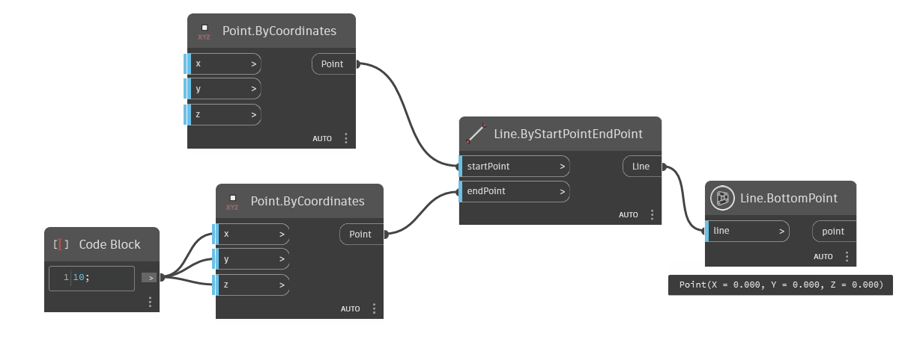
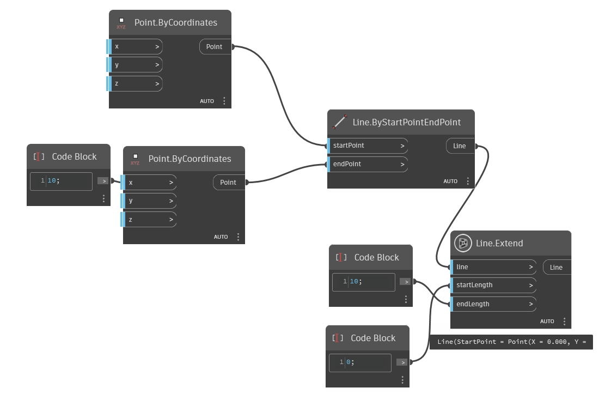
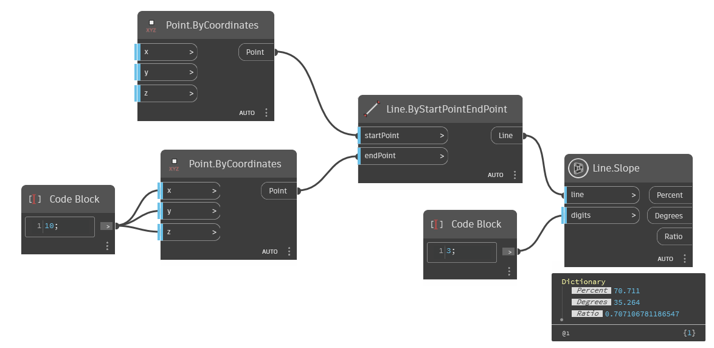
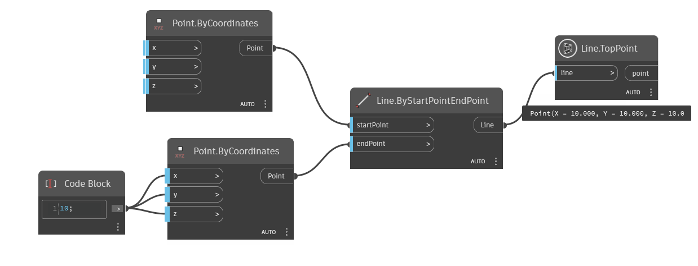

Class Line
- Namespace
- OpenMEPSandbox.Geometry
- Assembly
- OpenMEPSandbox.dll
public class Line- Inheritance
-
Line
- Inherited Members
Methods
BottomPoint(Line)
get bottom point of line
public static Point BottomPoint(Line line)Parameters
lineLinethe line to get
Returns
- Point
bottom point
Examples

Extend(Line, double, double)
Extends the line by lengths on both side.
public static Line Extend(Line line, double startLength, double endLength)Parameters
lineLinethe line need to extend
startLengthdoubleLength to extend the line at the start point.
endLengthdoubleLength to extend the line at the end point.
Returns
- Line
The extended line.
Examples

Slope(Curve?, double)
Return slope of line
[MultiReturn(new string[] { "Percent", "Degrees", "Ratio" })]
public static Dictionary<string, object?> Slope(Curve? line, double digits = 0)Parameters
lineCurveline to get slope
digitsdoubleNumber of fractional digits in the return value
Returns
Examples

TopPoint(Line)
get top point of line
public static Point TopPoint(Line line)Parameters
lineLinethe line to get
Returns
- Point
top point
Examples
